Dante OS — Ton écran d'accueil devient un univers
Ton écran d’accueil devient un univers.
Un univers Android sombre et vivant : une trentaine de modules, un vrai Linux pour les téléphones rootés. Sans publicité, sans statistiques, sans compte.
Gratuit · Android 10+ · ARM 64 bits · Dante Pro 5,99 € une seule fois
Un bureau qui vit
Des fonds animés calculés par la carte graphique, tes photos en bulles qui fuient le doigt, des cartes de données en direct. Dante règle tout seul la finesse des effets pour que chaque image reste fluide.
- 23 matières animées, jusqu'à 8 calques
- Bulles photo et billard du trou noir
- Fluide même avec tous les effets empilés
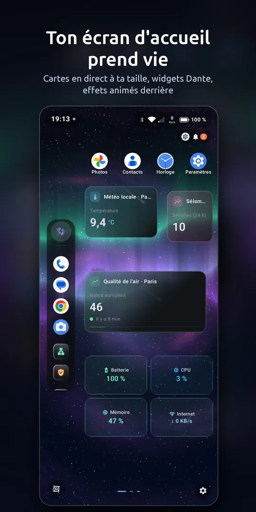


Le dock vit dans un bouclier
Touche le bouclier : le dock jaillit, puis s'y replie. Le bouclier lui-même s'habille de matières vivantes et réagit à chaque geste.
- 7 replis : Languette, Serpent, Aspirateur, Fouet, Supernova, Téléport, Verrouillage
- 8 effets : Éclairs, Trou noir, Feu, Magie, Champ de force, Glace, Glitch, Gardien
- 23 matières pour le bouclier
Sept façons de ranger tes applis
Glisse vers le haut : toutes tes applis et les modules de Dante, en vraie 3D, qui suivent les mouvements du téléphone.
- Montre, Néon, Sphère, Galaxie, Tourbillon, Trou noir, Tunnel 3D
- Recherche sans accents, modules compris
- Penche le téléphone : la Ruche suit

Un geste, et tout est là
Dante dessine sa propre barre d'état. Touche l'heure : la date, le processeur, la chaleur et ta protection d'un coup d'œil. Glisse du haut : tes notifications à gauche, tes Contrôles à droite. Et Paramètres devient un tableau de bord.
- Touche l'heure : la popup Infos, réglable bloc par bloc
- Appui long sur l'heure : le multitâche en cartes 3D
- Glisse du haut : notifications à gauche, Contrôles à droite
- Paramètres : mesures en direct, modules, Android rangé en 12 familles, recherche


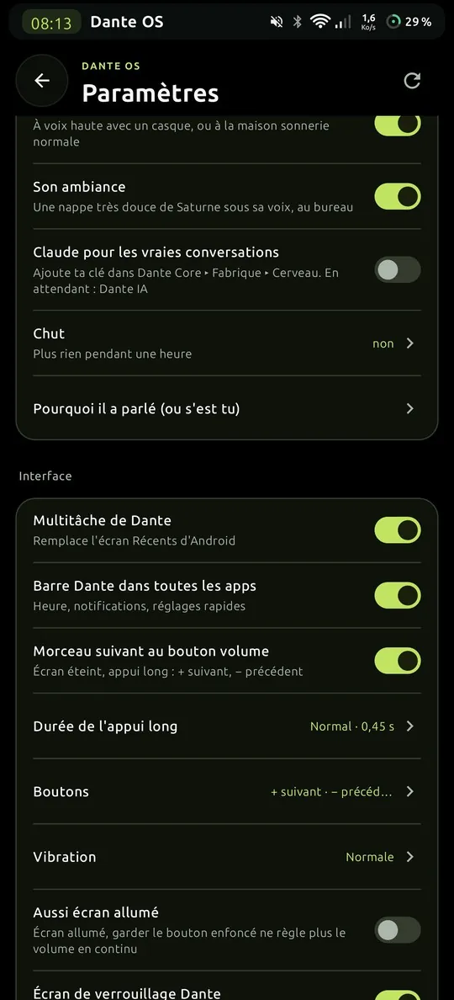

Onze façons de disparaître
Un toucher, et tout le bureau est aspiré. Il ne reste qu'un écran qui défend ton téléphone : il réagit, se souvient, menace. Seule ton empreinte fait revenir Dante.
- Singularité, Dante, Plasma, Dieu, Coffre, Verre noir…
- Photo de l'intrus au 10e toucher (option)
- Volet et Récents d'Android coupés pendant ce temps
Tout se règle, rubrique par rubrique
Dante Engine habille tout Dante, avec un aperçu en direct avant d'appliquer.
- 21 thèmes, 12 polices, 15 styles d'heure
- Couleurs, lueurs, barre d'état, popup Infos
- 10 formes d'icônes, packs d'icônes


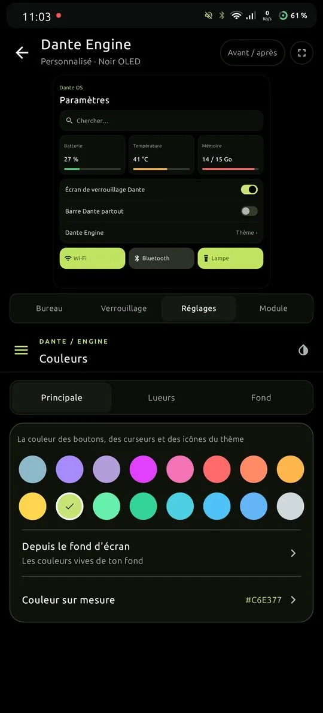

Univers, ou Sobre
Tu préfères le calme ? Le style Sobre retire l'espace et les effets : du gris, des formes nettes, une grille d'applis simple. Un toucher, et tu reviens exactement à ton Univers.
- Gratuit, les deux
- Retour exact à ton Univers


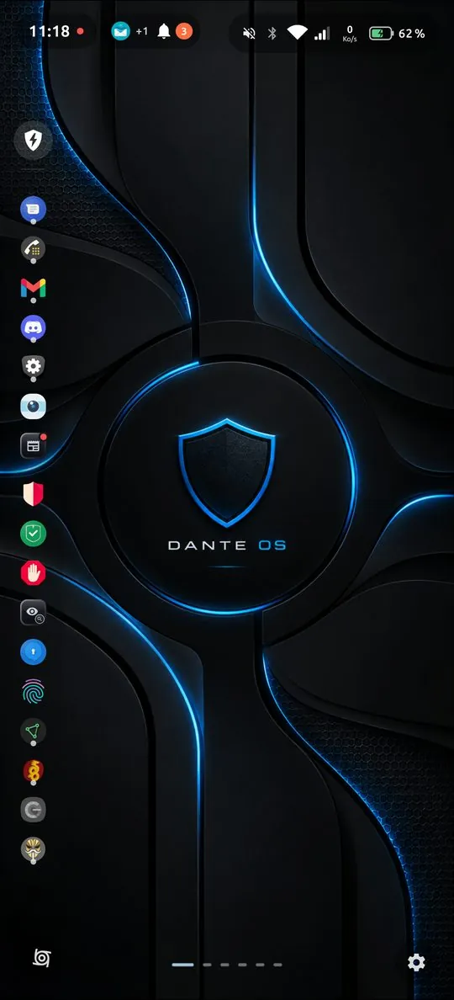


Un vrai Linux dans ton téléphone
Avec un téléphone rooté, Dante Core installe une Debian complète. Tout tourne sur le téléphone, hors des données de l'appli.
- Bureau Linux XFCE, Firefox, Dolphin, Konsole
- VS Code, Kali, recettes et tâches programmées
- Dante Agent et Genesis, le copilote

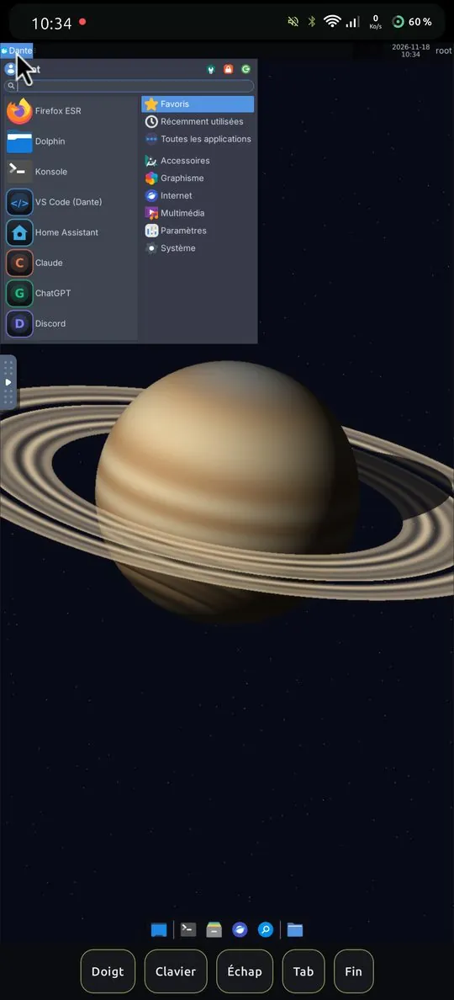


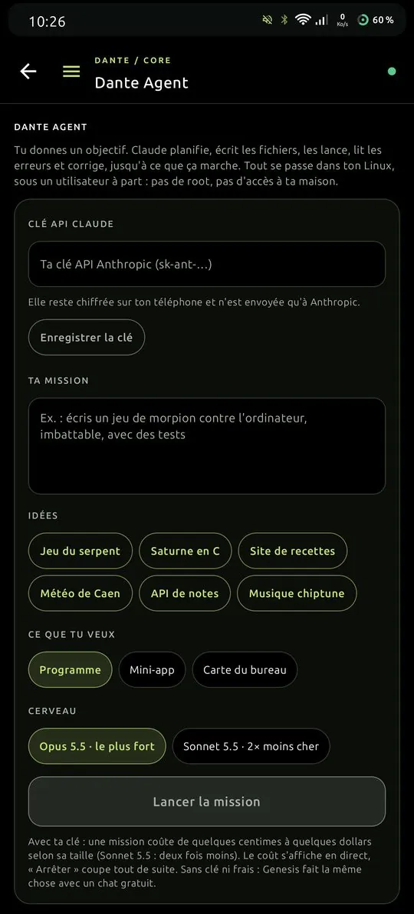
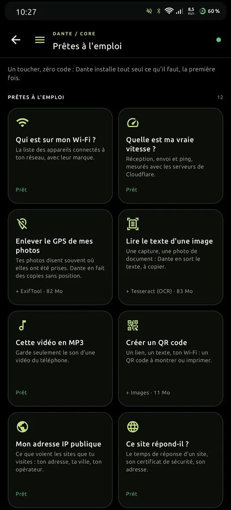


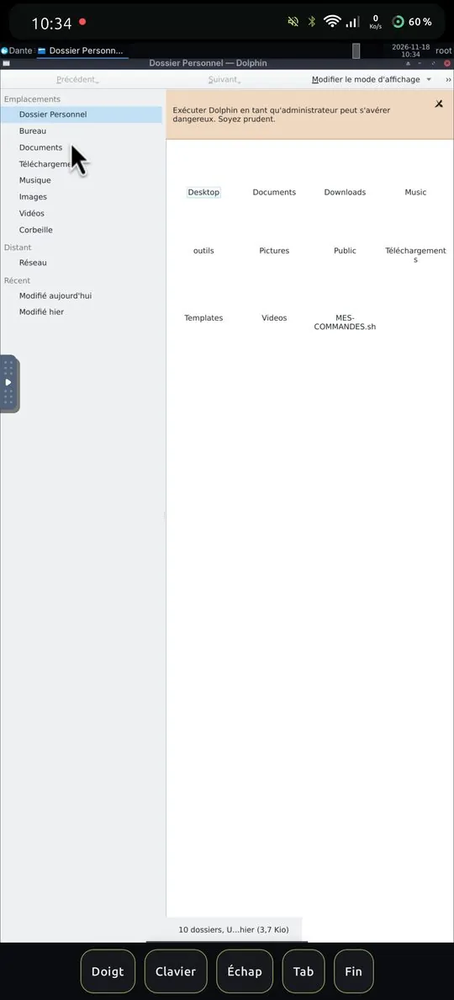
Demande une appli, Dante la fabrique
Une galaxie de 100 000 étoiles, la Terre en temps réel, un trou noir : de petites applis créées sur demande, posées sur le bureau comme les autres.
- Créées par Dante IA ou Dante Agent
- Posées sur le bureau en un toucher
Textures de la Terre : Solar System Scope (CC BY 4.0).
Dante OS en 40 secondes
Filmé sur un vrai téléphone, sans trucage. Le son, c'est la musique de Dante, composée pour lui.
Une trentaine d’outils, dans le même univers
Protection, système, fichiers, musique, actus, données en direct, assistant sur le téléphone : chaque module a sa fiche. Touche une capture pour l'ouvrir.


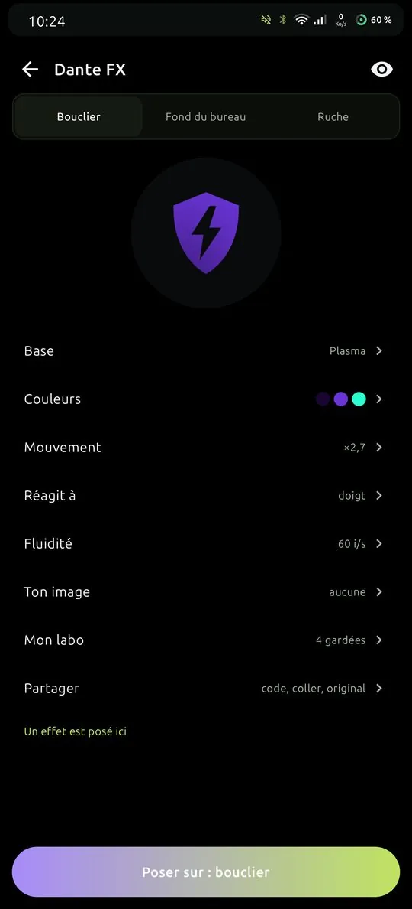


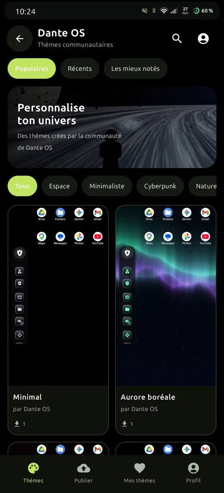
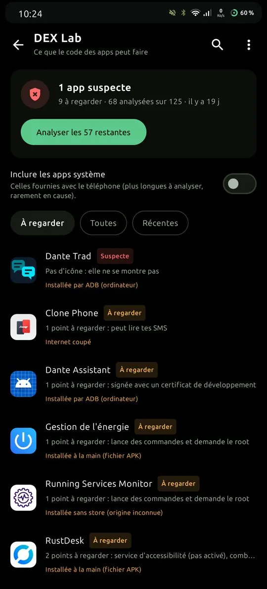


Tout Dante, de A à Z
Les mêmes fiches que le Guide de l'appli : chaque module, chaque geste, chaque réglage, ce que Dante lit et envoie, et quoi faire si quelque chose coince.
Les questions qu’on pose souvent
C'est gratuit ?
Oui. L'univers de base est gratuit pour toujours : bureau, dock et ses effets, widgets, dossiers, icônes, et tous les modules s'ouvrent. Dante Pro (5,99 €, une seule fois) débloque les usages avancés : Dante Core, Dante IA, Dante Engine, Dante FX, sources illimitées.
Faut-il rooter mon téléphone ?
Non. 28 modules sur 33 marchent sans root. Le root ouvre seulement le pare-feu, le filtre DNS, XRay, le réglage du processeur et de la batterie, et Dante Core, le vrai Linux.
Sur quels téléphones ?
Android 10 ou plus récent, sur un téléphone ARM 64 bits (presque tous les téléphones récents). Testé sur OnePlus 13 (Android 16), Pixel et Fold.
Le code n'est pas publié : est-ce que c'est sûr ?
Pas de publicité, pas de statistiques, pas de compte, aucune commande root sans ton accord. Chaque version a son empreinte publiée et toujours la même signature : tout se vérifie, sur VirusTotal ou avec PCAPdroid. La page Transparence explique comment.
Mes données partent où ?
Nulle part sans toi : seulement vers les sources que tu ajoutes toi-même. Dante IA tourne sur le téléphone, tes conversations n'en sortent pas.
Comment l'installer ?
Télécharge le fichier APK, ouvre-le, autorise l'installation depuis cette source, puis choisis Dante OS comme écran d'accueil. Une visite guidée t'accueille au premier lancement.
Et si je veux revenir à mon ancien écran d'accueil ?
Réglages Android ▸ Applications ▸ Applications par défaut ▸ Application d'accueil, et choisis l'ancien. Rien n'est perdu : ton ancien bureau t'attend tel que tu l'as laissé.
Prêt à entrer dans l’univers ?Tu es dans l’univers.
Gratuit, sans compte, sans publicité. Une visite guidée t'accueille au premier lancement, et le Discord est là si tu as une question.Une question, une idée ? Le Discord est là.